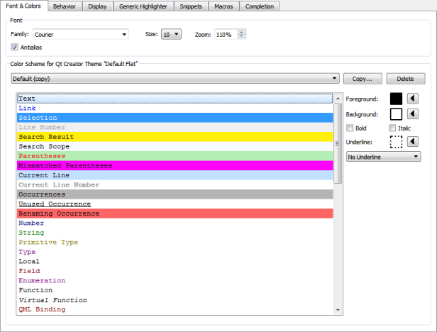

Font & Colors
To set editor font and colors, select Preferences > Text Editor > Font & Colors.

Configuring Fonts
You can select the font family and size. You can specify a zoom setting in percentage for viewing the text. You can also zoom in or out by pressing Ctrl++ or Ctrl+-, or by pressing Ctrl and rolling the mouse button up or down. To disable the mouse wheel function, select Preferences > Text Editor > Behavior and deselect the Enable scroll wheel zooming check box.
To improve the readability of text in the editor, adjust the line spacing in the Line spacing field.
Antialiasing is used by default to make text look smoother and more readable on the screen. Deselect the Antialias check box to turn off antialiasing.
See also Behavior and Change editor colors.